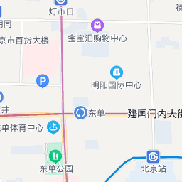

| 北京 | |||||
|---|---|---|---|---|---|
| 首页 | 历史沿革 | 地理环境 | 交通运输 | 风景名胜 | 历史文化 |
| 地理环境 | |||||
位置境域 地形地貌北京的地形和河流 北京市山区面积10200平方千米，约占总面积的62%，平原区面积为6200平方千米，约占总面积的38%。北京的地形西北高，东南低。北京市平均海拔43.5米。北京平原的海拔高度在20～60米，山地一般海拔1000～1500米。
水资源 十三陵水库 北京天然河道自西向东贯穿五大水系：拒马河水系、永定河水系、北运河水系、潮白河水系和蓟运河水系。多由西北部山地发源，向东南蜿蜒流经平原地区，最后分别在海河汇入渤海（蓟运河除外）。 北京市有水库85座，其中大型水库有密云水库、官厅水库、怀柔水库、海子水库。 北京市地下水多年平均补给量约为29.21亿立方米，平均年可开采量约24~25亿立方米。一次性天然水资源年平均总量为55.21亿立方米。 2013年北京市总用水量35.3亿立方米，比2012年增长1.4%。其中，生活用水14.5亿立方米，增长4.3%；工业用水5.6亿立方米，下降3.4%；农业用水12亿立方米，下降3.2%。 矿产资源 2013年北京已发现的矿种共67种，矿床、矿点产地476处，列入国家储量表的矿种44种，其中：能源矿产2种；黑色金属矿产4种，有色金属、贵金属及分散元素矿产11种；冶金辅助原料非金属矿产7种；化工原料非金属矿产5种；建材及其他非金属矿产15种。共有产地300处，其中黑色金属产地49处，有色金属产地35处，冶金辅助原料非金属产地43处，化工原料非金属产地68处，建材及其他非金属产地75处，煤炭产地30处。 植物资源 北京市地带性植被类型是暖温带落叶阔叶林并间有温性针叶林的分布。 大部分平原地区已成为农田和城镇，只在河岸两旁局部洼地发育着以芦苇、香蒲、慈菇等为主的洼生植被，但多数洼地已被开辟为鱼塘，在搁荒地及田埂、路旁多杂草；湖泊，水塘中发育着沉水和浮叶的水生植被。 海拔800米以下的低山带表性的植被类型是栓皮栎林、栎林、油松林和侧柏林。海拔800米以上的中山，森林覆盖率增大，其下部以辽东栎林为主，海拔1000米至1800~2000米，桦树增多，在森林群落破坏严重的地段，为二色胡枝子、榛属、绣线菊属占优势的灌丛。海拔1800~1900米以上的山顶生长着山地杂类草草甸。 动物资源 北京地区的动物区系有属于蒙新区东部草原、长白山地、松辽平原的区系成分，也有东洋界季风区、长江南北的动物区系成分，故北京的动物区系有由古北界向东洋界过渡的动物区系特征。截至2009年，此动物区系中有兽类约40种，鸟类约220种，爬行动物16种，两栖动物7种，鱼类60种。 |
|||||